ChatCPU：基于 LLM 的敏捷 CPU 设计与验证平台
该论文针对现有 LLM 在复杂硬件（如 CPU）设计与验证中成功率低、生成规模小、验证开销大的问题，提出首个端到端 LLM 敏捷硬件设计与验证平台 ChatCPU。方法上采用双 LLM 分层流程：LLM1 将自然语言规格翻译为自研的 Processor Description Language（PDL），LLM2 基于 PDL 逐模块迭代生成 Verilog/SystemVerilog；Agile Model Generator（AMG）依据 PDL 自动生成周期精确 CPU 参考模型，并通过 Module-interchangeable Verification Paradigm（MVP）以 Verilator 与 VPI/DPI/TLM 协仿真实现从单模块到整核的交叉验证与错误定位。团队用 LoRA 微调的 Llama2-70B 设计出约 8 万门的 6 级顺序 RISC-V CPU Saber6，经 SkyWater 130nm MPW 成功流片，为迄今最大的 LLM 生成 CPU。实验显示设计迭代平均加速 3.81X（HDL 实现最高 12X、验证最高 9.33X），设计能力较基线 LLama2 提升 2.63X，PDL 带来 2.06X 额外提升。
现有 LLM 在 HDL 设计与验证中表现不佳：生成代码常无法通过综合与功能检查，导致验证开销增加；已有 LLM 流片成果规模极小（如 ChipChat 约 1,000 门）；论文实测 Claude、GPT3.5、PaLM、LLama2、Code-LLama 随设计复杂度上升设计能力持续下降，且均无法生成功能正确的 LSU、ROB 或 PicoRV32。此外，纯基于 I/O 观测的 AI 设计流程是'黑盒'，验证困难。论文旨在构建从规格到 RTL 的端到端敏捷平台，解决 LLM 复杂系统设计与验证的挑战 C1-C3。
ChatCPU 采用层次化设计与模块化生成流程：（1）LLM 微调——用 Google Big Query 采集 GitHub 开源 RTL，经 GPT4 生成指令问答对，加入 PDL 规格与示例，以 LoRA 微调 Llama2-70B；（2）双 LLM 分工——LLM1 将设计规格转为 PDL（描述模块列表、流水线级、pin-to-pin 连接），LLM2 按 PDL 迭代生成各模块 HDL，经 linter 检查后进入验证，错误经 feedback engine 回传重设计；（3）PDL 作为统一机器可读中间表示，消除自然语言规格歧义；（4）AMG 基于事件驱动的解耦时序/功能建模，自动生成周期精确 CPU 参考模型；（5）MVP 验证范式——各模块经 Verilator 转为 RTL 模型做单元测试，与参考模型中对应模块交叉验证，通过后经 VPI/DPI/TLM 集成进参考模型做 ISA 测试、torture test、benchmark 与应用级协仿真，差异可精确归因到新集成模块；（6）集成 OpenEDA flow 做 PPA 优化。
设计出 6 级顺序 RISC-V CPU Saber6，约 80,000 门，为迄今最大 LLM 生成的 CPU，并经 SkyWater 130nm MPW（Efabless）成功流片
设计迭代平均加速 3.81X，HDL 实现阶段最高 12X，验证阶段最高 9.33X（12 名研究生分四组的对照实验）
在 RTLLM benchmark 上，微调后 LLM 设计能力较基线 LLama2 平均提升 2.63X，且能生成全部被测硬件模块
使用 PDL 相比人类书写的规格使设计能力平均提升 2.06X
LLM 驱动的 RTL 优化（GCD、USB interface、Zipdiv、Picorv32、加密协处理器）：功耗平均降低 16.70%、面积平均降低 13.69%，峰值分别达 36.36% 与 27.72%
MVP 在复杂设计（CPU 前端、后端、整核）上显著减少迭代次数，但在简单设计上因完整验证流程反而增加迭代
结论中称集成 OpenEDA flow 后 RTL-GDS 效率平均提升 3.81X
基线评估中，Claude、GPT3.5、PaLM、LLama2、Code-LLama 均无法生成功能正确的 LSU、ROB 或 PicoRV32
区别于 ChipGPT（侧重 prompt 优化）与 ChipChat（仅约 1,000 门小规模演示），ChatCPU 是首个端到端 LLM 敏捷设计与验证平台：引入专用 Processor Description Language 作为统一机器可读中间表示，同时驱动 HDL 生成与参考模型构建；提出 AMG 自动生成周期精确参考模型；提出 MVP 模块可互换验证范式，借助预验证参考模型将协仿真差异精确定位到新集成模块，规避 LLM token 与对话历史限制；采用双 LLM 角色分工与 LoRA 微调，并以 8 万门 RISC-V CPU 实际流片验证规模可扩展性。
相关度级别：high
命中能力域：2.7 EDA/验证自动化与 AI 辅助 | 2.4 设计验证方法学 | 2.2 RTL 设计与实现
理由：论文直接命中 2.7 域的核心技术'LLM/AI 辅助 RTL 生成/验证'，并实质覆盖 2.4 域的参考模型协仿真与模块级验证方法学、2.2 域的 RTL 生成与功耗/面积优化。虽然验证对象是 RISC-V CPU 而非团队的 LPDDR/HBM/UCIe IP，但其'规格→机器可读中间语言→参考模型+RTL 协仿真'的闭环与团队'沉淀可复用方法学与自动化能力'的定位高度一致：MVP 的 golden reference model 交叉验证思路可迁移到 IP 模块级 debug 与 bug 归因，PDL 思路可借鉴用于 DDR/UCIe 协议规格的形式化整理，LLM 微调生成 RTL 可用于中小规模模块的敏捷迭代与初版代码生成。
建议动作：深入精读并做内部分享
Xi Wang, Gwok-Waa Wan, Sam-Zaak Wong, Layton Zhang, Tianyang Liu, Qi Tian, Jianmin Ye
Xi Wang, Gwok-Waa Wan, Sam-Zaak Wong, Layton Zhang, Tianyang Liu 等。ChatCPU：基于大语言模型（LLM）的敏捷CPU设计与验证平台。第61届ACM/IEEE设计自动化会议（DAC '24），ACM/IEEE，2024年6月，美国旧金山。第1-6页，⟨10.1145/3649329.3658493⟩。⟨hal-04642833⟩
提交于 2024 年 7 月 10 日
HAL 是一个多学科的开放获取档案库，用于存储和传播科学研究文献，无论其是否已发表。这些文献可能来自法国或国外的教学与研究机构，也可能来自公立或私立研究中心。
多学科开放档案库 HAL 旨在存储和传播研究级别的科学文献，无论其是否已发表，这些文献来自法国或国外的教学与研究机构，以及公立或私立实验室。
根据知识共享（Creative Commons）CC BY-NC 4.0 - 署名 - 非商业性使用 - 国际许可协议分发
xi.wang@seu.edu.cn
东南大学集成电路学院国家ASIC中心
国家EDA技术创新中心
中国江苏南京
半导体设计日益增长的复杂性要求采用敏捷的硬件开发方法，以跟上快速的技术进步。顺应这一趋势，大语言模型（LLMs）作为一种潜在的解决方案应运而生，为硬件设计自动化带来了新的机遇。然而，现有的LLM在硬件描述语言（HDL）设计与验证方面仍面临挑战，尤其是针对复杂的硬件系统。针对这一需求，我们提出了ChatCPU——首个基于LLM的端到端敏捷硬件设计与验证平台。ChatCPU精简了专用集成电路（ASIC）的设计与验证流程，凭借更强的设计敏捷性，引导其从初始规格说明直至最终的寄存器传输级（RTL）实现。通过融合LLM微调与面向CPU设计自动化的处理器描述语言设计，ChatCPU显著增强了利用LLM进行硬件设计的能力。利用ChatCPU，我们开发了一款6级顺序执行的RISC-V CPU原型，并借助Efabless的SkyWater 130nm多项目晶圆（MPW）项目成功完成流片，这是目前由LLM生成的规模最大的CPU设计。我们的结果表明，CPU设计效率得到了显著提升，设计迭代过程平均加速3.81倍，其中在HDL实现和验证阶段分别最高达到12倍和9.33倍。与基座模型LLama2相比，ChatCPU还将LLM的设计能力提升了2.63倍。ChatCPU的这些进展代表了LLM驱动的ASIC设计与优化领域的一个重要里程碑。
CCS概念：· 计算方法学 → 人工智能；· 计算机系统组织；· 硬件 → 电子设计自动化；
Xi Wang, Gwok-Waa Wan, Sam-Zaak Wong, Layton Zhang, Tianyang Liu, Qi Tian, and Jianmin Ye. 2024. ChatCPU：一种基于LLM的敏捷CPU设计与验证平台。载于第61届ACM/IEEE设计自动化会议（DAC '24），2024年6月23日至27日，美国加利福尼亚州旧金山。ACM，美国纽约州纽约市，
共6页。https://doi.org/10.1145/3649329.3658493
∗ 通讯作者：Gwok-Waa Wan
允许免费制作本作品全部或部分的数字或硬拷贝副本用于个人或课堂用途，前提是此类副本不用于牟利或商业目的，且副本在首页带有本声明及完整的引用信息。本作品中归作者以外的他人所有的组件之版权必须得到尊重。允许注明出处的摘录引用。若以其他方式复制、重新出版、上传至服务器或分发给邮件列表，则需事先获得特定许可和/或支付费用。如需申请许可，请联系 permissions@acm.org。
© 2024 版权归所有者/作者所有。出版权授权给ACM。ACM ISBN 979-8-4007-0601-1/24/06
Gwok-Waa Wan ∗ Sam-Zaak Wong Layton Zhang
{gwokwaa,samzaak,layton}@nctieda.com 国家集成电路设计自动化技术创新中心 中国江苏南京 Tianyang Liu Qi Tian Jianmin Ye
{liutianyang,qi_tian,jianmin_y}@seu.edu.cn 国家ASIC中心，东南大学集成电路学院 中国江苏南京
在大数据时代，机器学习、图分析、区块链等数据密集型工作负载的激增，显示出对增强计算能力日益增长的需求。这一需求，连同CMOS工艺微缩和领域专用架构的进步，催化了现代芯片设计复杂度的不断攀升。因此，从零开始为这类系统构建硬件原型的过程已成为一项艰巨的挑战，需要在实现和验证方面投入大量的时间和精力。
针对这一挑战，许多工作致力于敏捷硬件设计以加速迭代。近期的方法利用了高层次综合（HLS）[6]以及Chisel、SpinalHDL等现代硬件描述语言（HDLs）[2]，它们随后可被编译为RTL。然而，这些方法旨在通过额外的抽象层来提升敏捷性，从而导致设计验证困难，并且难以对性能、功耗和面积（PPA）进行细粒度控制 [12, 16]。
机器学习（ML）和人工智能（AI）的创新为敏捷硬件设计开辟了新的途径 [10]。当前的ML应用针对特定的设计阶段，例如设计空间探索、物理设计等，但其在覆盖从硬件规格到HDL实现的整个处理器设计周期中的集成仍处于起步阶段 [15, 17, 18]。尤其是处理器设计和验证过程，仍然是一项劳动密集型的工作，需要深厚的专业知识和大量的验证。大语言模型（LLMs）[13]的出现为该领域带来了机遇。近期的工作展示了LLMs在自动化硬件实现方面的潜力 [3, 4]。然而，LLM生成的硬件设计质量在综合和功能验证方面带来了挑战，往往导致调试和验证工作量的增加。此外，现有的基于LLM的芯片生成规模仍然极小，且LLMs在CPU等复杂系统设计方面能力有限。
因此，我们提出了 ChatCPU，一个基于微调大语言模型（LLM）的敏捷 CPU 设计与验证平台。ChatCPU 的特点在于层次化的 CPU 设计算法学和模块化的 HDL 生成范式。我们还设计了一种全新的处理器描述语言（PDL），专门用于清晰而统一的 CPU 架构描述，通过消除设计规范中的歧义来改进提示词管理。我们进一步引入了敏捷模型生成器（AMG），用于基于 PDL 的 CPU 设计描述自动生成 CPU 参考模型。通过集成 AMG 与 PDL，我们提出了模块可互换验证范式（MVP），以应对利用 LLM 验证复杂硬件系统设计所面临的挑战。得益于更强的智能化与自动化能力，ChatCPU 大幅减少了设计迭代所需的时间和精力，简化了硬件开发从实验室到晶圆厂（lab-to-fab）的流程。作为对所提出框架的验证，我们使用 ChatCPU 设计了 Saber6，一个 6 级顺序执行的 RISC-V CPU，并通过 OpenEDA 流程 [14] 和 SkyWater 130nm 多项目晶圆（MPW）项目实现了硅原型。作为案例研究，我们利用 ChatCPU 结合 OpenEDA 流程 [14] 和 MPW 项目设计并实现了一个 RISC-V CPU 原型，展示了 ChatCPU 在革新 CPU 设计与验证方面的潜力。
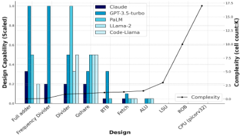
本研究做出了六项关键贡献。
本文其余部分的组织结构如下。第 2 节介绍 ChatCPU 的动机及相关工作。第 3 节描述 ChatCPU 的详细设计与工作流程。第 4 节给出对 ChatCPU 的评估，第 5 节对全文进行总结。
以 BERT、GPT-2 和 GPT-3 为代表的大语言模型（LLM）的最新进展，在自然语言处理（NLP）和文本生成方面展现出了显著的能力。这些模型能够有效利用上下文信息，为从高层自然语言输入生成复杂的硬件设计提供了可能 [9]。ChipGPT [4] 和 ChipChat [3] 等工作利用 LLM 进行硬件设计。然而，ChipGPT 更侧重于优化提示词，而非应对敏捷硬件设计中更广泛的挑战 [19]。相比之下，ChipChat 虽然推动了 LLM 在芯片设计中的应用，但其仅在小规模（约 1,000 个逻辑门）上展示了结果，与集成数十亿个逻辑门的现代处理器相比相形见绌。这种差距使人们对这些方法在更复杂设计中的可扩展性和实用性产生了疑问。
除设计生成之外，验证仍然是 AI 驱动的硬件设计范式中的一个关键环节。例如，最近的一项研究探索了仅基于外部输入/输出（I/O）观测的 AI 驱动 CPU 设计，其通过大量的 I/O 操作进行电路匹配，而非采用形式化程序代码。这种方法虽然在其适用范围内有效，但会导致“黑盒”式的设计流程，从而带来潜在的冗余以及设计验证方面的挑战 [5]。尽管当前的 LLM 已取得长足进步，但其生成的硬件设计仍然容易出错，可能无法通过综合和功能检查，从而给验证带来额外开销。鉴于现代 CPU 设计验证的高昂成本，敏捷硬件设计不仅必须实现硬件描述语言（HDL）生成的自动化，还必须简化验证流程，这一点势在必行。
为了评估 LLM 在硬件设计生成方面的效能，我们使用 Claude、GPT3.5、PaLM、LLama2 和 Code-LLama 开展了一项评估。我们的测试涉及生成十个不同的用 Verilog 编写的开源硬件设计，其复杂度从简单的加法器到复杂的 CPU 不等。每个 LLM 都被给予完全相同的设计规格，我们对其综合与功能验证的结果进行了监测。若检测到错误，则要求 LLM 对代码进行调试并重新生成。我们采用如下度量指标对每个 LLM 的设计能力（C）进行量化：
其中，N 表示 LLM 通过综合与验证所需的迭代次数。
依据该指标，C 值越高表明设计能力越强。我们允许每个设计最多进行 20 次迭代。如果某个 LLM 在这些迭代内未能生成可行的设计，则其在该特定设计上的设计能力将被记为零。如图 1 所示，GPT3.5 在受评估的 LLM 中展现出最高的设计能力。然而，我们观察到，随着设计复杂度的增加，所有 LLM 的设计能力均出现持续下降，这在从较简单的设计过渡到包含超过 17,000 个单元的设计（例如 PicoRV32 CPU）时尤为明显。值得注意的是，没有任何一个 LLM 成功生成可正常工作的加载存储单元（LSU）、重排序缓冲区（ROB）或 PicoRV32 CPU 设计，这凸显了 LLM 在处理复杂系统设计时所面临的挑战。
在第 2.2 节的结果与分析的基础上，我们识别并定义了基于大语言模型（LLM）的硬件设计中的三个主要挑战（C1-C3）：
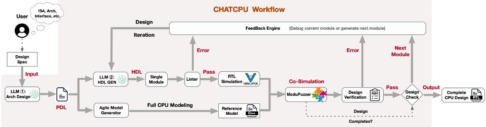
模块，其有效性随着复杂度的增加而下降。这一局限性在错综复杂的硬件系统中尤为明显，在这类系统中，LLM 有效生成设计的成功率会显著降低。
针对第 2.3 节中识别出的 LLM 硬件设计挑战（C1-C3），我们提出了 ChatCPU 设计，并融入了以下关键解决方案：
高层次综合（HLS）提供了通过 C/C++ 等高级语言抽象复杂寄存器传输级（RTL）设计细节的便利，但它限制了对硬件实现以及功耗、性能与面积（PPA）权衡的控制。此外，将问题从 HLS 追溯到原始代码十分困难，使调试和验证变得复杂。类似地，尽管 Chisel 和 SpinalHDL 各有优势，但它们在设计验证方面存在局限，例如变量重命名和断言支持不足。因此，在本工作中，我们为 ChatCPU 选择了传统的硬件描述语言（HDL，即 Verilog/SystemVerilog），以充分利用其在设计与验证流程中的稳健性和透明性。
为了增强大语言模型（LLM）在寄存器传输级（RTL）代码生成方面的能力，我们利用 Google Big Query 从 GitHub 收集开源 RTL 设计，构成了我们的主要数据集。随后，我们使用 GPT4 对该数据集进行处理，为每个 RTL 片段生成相应的指令，再进行去重并剔除无关数据。我们使用 Llama2-70B 模型对这些问答对进行训练，旨在使 RTL 代码与其功能描述相对齐。这种方法使 LLM 不仅能够理解 RTL 语法，还能理解其背后的功能上下文。此外，我们还将我们的 PDL 设计规范及详细示例纳入训练集。这一补充旨在提升 LLM 基于设计规范生成 HDL 和 PDL 内容的熟练度。在微调阶段，我们采用了低秩适应（Low-Rank Adaptation，LoRA）技术，该技术仅针对有限数量的参数，并假设模型调优过程中权重变化具有较低的“内在秩”。该方法对自注意力模块中权重矩阵的低秩分解进行优化，从而将优化过程从高维精简至低维。
如图 2 所示，ChatCPU 采用层次化设计与模块化生成流程，其中包含两个经过微调、角色各异的 LLM。第一个 LLM（LLM 1）负责使用我们的处理器描述语言（Processor Description Language，PDL）将设计规范转换为高层架构设计，详细描述模块列表、流水线级以及引脚到引脚的连接等内容。随后，该 PDL 文件被输入敏捷模型生成器（Agile Model Generator，AMG），以自动生成用于设计验证的周期精确 CPU 参考模型。与此同时，第二个 LLM（LLM 2）对每个模块的 PDL 进行处理，迭代地生成详细的 HDL 实现。模块通过 linter 检查后，会被 verilated 为相应的 RTL 模型，以便与 CPU 参考模型进行协同仿真。该过程是 MVP 的一部分，可实现功能的交叉验证。如果验证成功，设计检查器会通过反馈引擎提示 LLM 1 继续进行下一个模块的生成。在代码 lint 检查或设计验证过程中发现的任何错误都会被报告给 LLM 2，以便对模块进行重新设计。
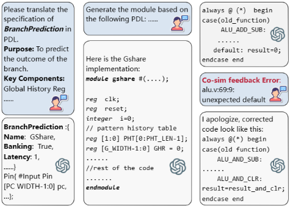
图 3 给出了 ChatCPU 中提示词交互的示例。图中 (a) 部分展示了 LLM 1 如何接收规范输入，并针对分支预测单元（Branch Prediction Unit，BPU）设计生成相应的 PDL 输出。(b) 部分演示了在 LLM 2 中基于所提供 PDL 的设计生成过程。最后，图中 (c) 部分展示了验证过程中遇到问题的场景，凸显了 ChatCPU 中设计与验证循环的交互性与迭代特性。
在 ChatCPU 中，处理器描述语言（PDL）被创新性地设计出来，用于封装每个 CPU 模块的时序、功能、流水线架构以及引脚到引脚的接口。PDL 能够有效地将原本以自然语言形式表达的 CPU 设计规范转换为统一的、机器可读的格式。PDL 文件中的这种全面表示使其能够作为 HDL 实现生成和 CPU 参考模型构建的基础输入。图 3(a) 给出了 PDL 在 CPU 设计规范中使用的示例。
如图 4 所示，ChatCPU 中的敏捷模型生成器（AMG）通过解析 PDL 输入来启动其处理流程，以定义 CPU 的时序行为、功能特性和流水线结构。AMG 通过明确定义的时序接口促进模块间的交互，确保跨不同模块的时序关系得到精确表示。
AMG 运行的核心是一种解耦的时序与功能建模机制，采用基于事件的仿真方法来同时提升可配置性和可扩展性。在该系统中，事件处理器通过功能接口将时序事件与其对应的功能仿真关联起来。AMG 模块库中存放着用于仿真现代 CPU 设计中经典模块行为的功能实现。功能仿真完成后，时序接口会收到信号以调度后续事件。AMG 工作流的最后阶段是将已建立的各模块按流水线方式连接起来，最终生成完整的 CPU 参考模型。
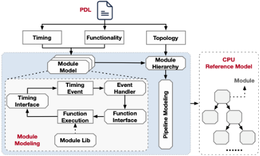
Verification plays a pivotal role in ASIC design, particularly for designs generated by LLMs. Addressing the verification challenge ( C3 ) outlined in Section 2.3, we introduce the Module-interchangeable Verification Paradigm (MVP), specifically tailored for LLM-based CPU design. An example of this flow is shown in Figure 5.
The CPU reference model serves as the cornerstone for design verification. The reference model generated by ChatCPU offers a modularized golden model for both module-level and comprehensive CPU verification. We first ventilate each generated module to a respective RTL model for module-level simulation. The verification process starts with each LLM-generated module being translated into an RTL model using Verilator, a tool that converts RTL designs into C++ for simulation. Module-level verification is then conducted through unit tests, with results cross-validated against the equivalent module in the CPU reference model. Modules successfully passing unit tests, akin to fitting pieces in a jigsaw puzzle, are then integrated into the reference model. This integration is facilitated by co-simulation techniques such as Verilog Procedural Interface (VPI), Direct Programming Interface (DPI), or Transaction-Level Modeling (TLM), ensuring seamless module interchangeability.
Given the unified design language provided by PDL, the interchanged modules align perfectly with the reference model. The subsequent co-simulation of the verified RTL model with the reference model allows for comprehensive functionality evaluations. This includes ISA tests, torture tests, benchmarks, and real-world application simulations. As the CPU reference model is pre-verified for functional correctness, any discrepancies identified during cosimulation can be accurately attributed to the newly integrated RTL module. This targeted approach significantly streamlines the debugging process, overcoming the limitations of LLM-generated designs related to token and chat history constraints. The MVP approach thus offers a modular yet holistic verification strategy, ideally suited for the LLM-driven, modularized CPU design process, effectively addressing the complexity of verifying intricate systems.
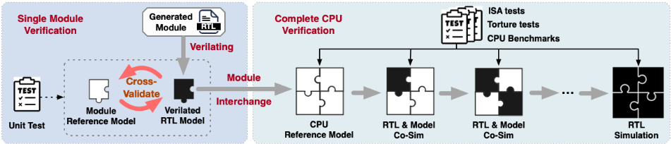
Our experimental environment is delineated in Table 1.
To validate our methodologies, we designed a 6-stage in-order RISC-V CPU, named Saber6 , using ChatCPU. This CPU, comprising approximately 80,000 gates, represents the largest and most complex CPU design generated by LLMs to date. The tapeout was completed with the SkyWater 130nm MPW project, and the layout and detailed PPA information are illustrated in Figure 12.
| Server | NVIDIA Server@Teax,US |
|---|---|
| CPU | AMD EPYC 7V13 64-Core Processor |
| GPU | 4xA100(80GB,PCIE4.0) |
| Memory | 256GB |
| CUDA | 12.0 |
| Disk | 1024GB |
| OS | Ubuntu 22.04 |
| Server | NVIDIA Server@Teax,US |
为了评估 ChatCPU 为设计流程带来的加速效果，我们开展了一项涉及 12 名研究生的实验，并将他们分为四组。其中一组使用 ChatCPU（G1），其余各组（G2-G4）则不使用任何大语言模型（LLM）。各组完成相同 CPU 设计任务所需的时间成本如图 8 所示。能够使用 ChatCPU 的 G1 组完成时间明显更短，尤其是在代码正确性和验证阶段。平均而言，ChatCPU 用户获得了 3.81 倍的时间节省，效率提升显著：寄存器传输级（RTL）编码环节高达 12 倍，设计验证环节达 9.33 倍。这些结果验证了我们的方法在加快代码生成、提高验证成功率以及提升整体开发效率方面所带来的进步。
我们的分析还聚焦于 MVP 对设计能力的影响。我们评估了 ChatCPU 在 Saber6 中生成各类 CPU 模块的能力，对比了启用 MVP 与禁用 MVP（仅使用单元测试）两种场景。如图 9 所示的结果表明，虽然 MVP 在较简单的硬件设计中会导致更多的迭代（原因在于其详尽的 CPU 验证流程），但它显著减少了复杂设计所需的迭代次数。这种减少在 CPU 前端、后端以及完整 CPU 设计中紧耦合的模块上尤为明显，因为在这些场景中，MVP 的综合验证流程至关重要。相反，在没有 MVP 的情况下，即使是经过微调的 LLM 也难以应对复杂系统中跨模块验证带来的挑战。
此外，我们评估了在 ChatCPU 中采用 PDL 所带来的影响。对比使用与不使用 PDL 时的设计能力（图 10）表明，使用 PDL 相比人工编写的规格说明平均可将设计能力提升 2.06 倍。
最后，为了进一步评估设计复杂度，我们将 Saber6 的单元数量与其他由 LLM 生成的硬件设计进行了比较，其中包括 Efabless AI 设计竞赛 [8] 的参赛作品。如图 11 所示，就单元数量而言，Saber6 表现出显著高于其他设计的复杂度。这一比较凸显了 ChatCPU 在促进复杂硬件系统生成方面的有效性，彰显了其革新敏捷硬件设计方法的潜力。
In this work, We first investigated the LLM-based hardware designs and summarized the associated challenges. Targeting these challenges, we proposed the ChatCPU platform to enhance the agile CPU design and verification using LLM. We proposed a hierarchical CPU design methodology with fine-tuned LLM, featuring distinct roles in the modularized CPU generation paradigm. We also introduced a Module-interchangeable Verification Paradigm
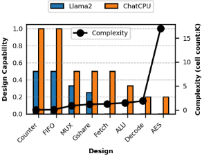
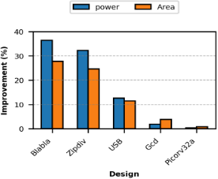
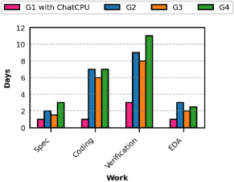
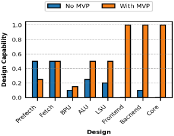
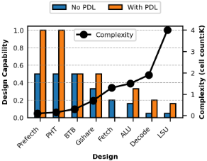
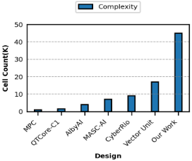
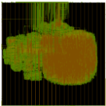
| Feature | Parameters |
|---|---|
| PDK | Skywater 130nm |
| Gate Count | 80,000 |
| Pipeline | 6 |
| Frequency | 100MHz |
| Total Power | 19.2mW |
| Area | 0.18mm 2 |
| Feature | Parameters |
(MVP) to verify the hardware designs generated by LLMs effectively. ChatCPU also integrates the OpenEDA flow to enable automated PPA optimizations, achieving an impressive boost in RTL-GDS efficiency by an average of 3.81X. Finally, we designed the largest RISC-V CPU generated by LLMs, with a scale of 80K gates using ChatCPU as a silicon prototype to validate our methodologies and exploit the transformative potential of LLMs in complex CPU designs.